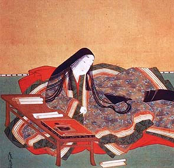
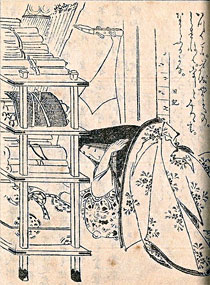
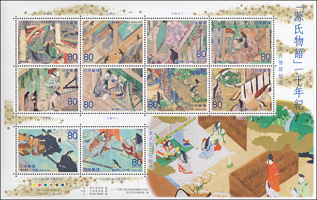
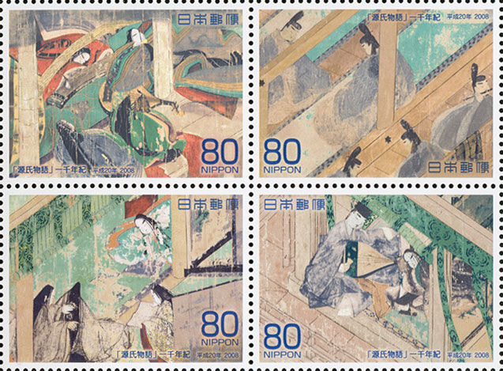
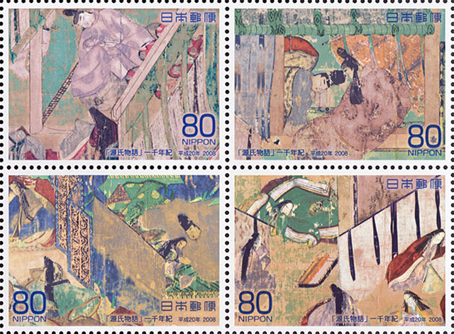
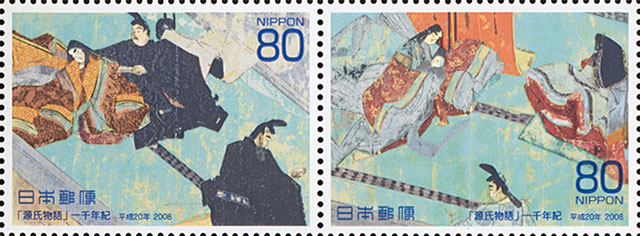

Created:
03/14/10. Revised: 03/14/10.
Copyright © 2010 by Victor Manta, Switzerland. All rights reserved worldwide |
|
Murasaki Shikibu (973 - 1014 or 1025 - 1031), or Lady Murasaki as she is often known in English, was a Japanese novelist, poet, and a maid of honor of the imperial court during the Heian period. She is best known as the author of The Tale of Genji, written in Japanese between about 1000 and 1008, one of the earliest novels in human history.


"Murasaki Shikibu" was not her real name, which is unknown. Some scholars have postulated that her given name might have been Fujiwara Takako, recorded as a name of a lady-in-waiting ranked shoji on the 29th day of the 1st month, Kanko 4 (February 19, 1007). Her own diary, The Murasaki Shikibu Diary, states that she was nicknamed "Murasaki" ("Violet") at court, after a character in The Tale of Genji. "Shikibu" refers to her father's position in the Bureau of Ceremony (shikibu-sho).
Lady Murasaki Shikibu was born about 973 in Kyoto, Japan. She was born in a family of minor nobility and a member of the northern branch of the Fujiwara clan.

Murasaki's mother died while she was a child, so Murasaki was raised, contrary to customs of the time, by her father Fujiwara no Tametoki, a scholar and officer of the imperial court. During Heian-era Japan, couples lived separately and children were raised by the mother and her family. Also contrary to customs of the time, her father gave her a male education. Men were taught kanji and classical Chinese literature as the requisite culture, while women were taught kana and poetry. Her father praised her intelligence and ability, but lamented that she was "born a woman". She was married in her early 20s and had one child, Daini no Sanmi, who was a poet in her own right.
At the royal court, she was the lady-in-waiting for Empress Shoshi (Akiko) and may have been hired by Fujiwara no Michinaga to serve the Empress.
Murasaki died either in 1014, when records show that her father suddenly returned to Kyoto from his governor's mansion, or between 1025 and 1031, when she would have been in her mid-50s, fairly old by Heian standards.

Three works are attributed to Murasaki, the most important being The Tale of Genji. The Murasaki Shikibu Diary and The Murasaki Shikibu Collection were arranged and published posthumously. The collection is a compilation of 128 poems written by Murasaki.
Murasaki is considered one of the greatest writers of Japanese literature. Statues in her honour have been erected throughout Japan, her works are a staple part of the education curriculum in Japan. The 2000 yen note was issued in commemoration to her and her greatest epic work, The Tale of Genji. She was a lady-in-waiting for Emperor Ichijo at the time. After his death, she became the lady-in-waiting for the Empress Akiko. Source

The Tale of Genji is a classic work of Japanese literature attributed to the Japanese noblewoman Murasaki Shikibu in the early eleventh century, around the peak of the Heian Period. It is sometimes called the world's first novel, the first modern novel, the first psychological novel or the first novel still to be considered a classic, though this issue is a matter of debate (see Stature below).
As with most Heian literature, the Genji was probably written mostly (or perhaps entirely) in kana (Japanese phonetic script) and not in Chinese characters because it was written by a woman for a female audience. Writing in Chinese characters was at the time a masculine pursuit; women were generally discreet when using Chinese symbols, confining themselves mostly to pure Japanese words.
The work recounts the life of a son of a Japanese emperor, known to readers as Hikaru Genji, or "Shining Genji". For political reasons, Genji is relegated to commoner status (by being given the surname Minamoto) and begins a career as an imperial officer. The tale concentrates on Genji's romantic life and describes the customs of the aristocratic society of the time. Much is made of Genji's good looks.
The tale ends abruptly, in mid-sentence. Opinions have varied on whether the ending was the intended ending of the author. Source

The miniature sheet displayed above was issued by the Japan Post on 22 September 2008. The first 10 stamps of the sheet are designed after "The Picture Scroll of The Tale of Genji", and the last two after "The Picture Scroll of The Diary of Murasaki Shikubu". The stamps were designed by Kaifuchi Jyunko. Michel 4659 - 4668, MS 220 x 140 mm.
Created:
03/14/10. Revised: 03/14/10.
Copyright © 2010 by Victor Manta, Switzerland. All rights reserved worldwide |
|